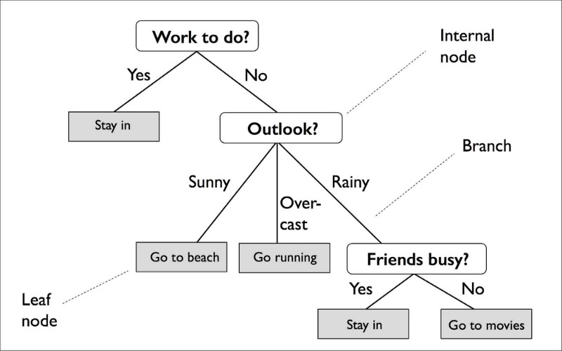
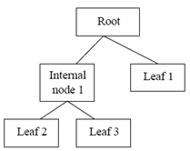
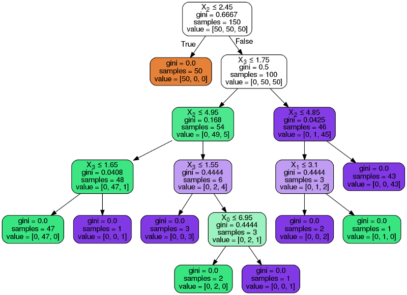

decision
DATAMINING, CLASSIFICATION MENGGUNAKAN DECISION TREE (POHON KEPUTUSAN)¶
Dengan memahami konsep dasar dan matematika di balik pohon keputusan, mari belajar untuk membangun pohon keputusan klasifikasi !
Pohon keputusan adalah model pembelajaran mesin yang diawasi yang digunakan untuk memprediksi target dengan mempelajari aturan keputusan dari fitur. Seperti namanya, kita dapat menganggap model ini sebagai penghancuran data kita dengan membuat keputusan berdasarkan serangkaian pertanyaan.
Mari kita perhatikan contoh berikut di mana kita menggunakan pohon keputusan untuk memutuskan suatu kegiatan pada hari tertentu:

Berdasarkan fitur dalam set pelatihan , model pohon keputusan mempelajari serangkaian pertanyaan untuk menyimpulkan label kelas dari sampel. Seperti yang bisa kita lihat, pohon keputusan adalah model yang menarik jika kita peduli pada interpretabilitas.
A. PENGERTIAN POHON KEPUTUSAN (DECISION TREE)¶
Proses pada pohon keputusan adalah mengubah bentuk data (tabel) menjadi model pohon, mengubah model pohon menjadi rule, dan menyederhanakan rule. Manfaat utama dari penggunaan pohon keputusan adalah kemampuannya untuk membreak down proses pengambilan keputusan yang kompleks menjadi lebih simpel sehingga pengambil keputusan akan lebih menginterpretasikan solusi dari permasalahan. Pohon Keputusan juga berguna untuk mengeksplorasi data, menemukan hubungan tersembunyi antara sejumlah calon variabel input dengan sebuah variabel target.
Pohon keputusan merupakan himpunan aturan IF…THEN. Setiap path dalam tree dihubungkan dengan sebuah aturan, di mana premis terdiri atas sekumpulan node-node yang ditemui, dan kesimpulan dari aturam terdiri atas kelas yang terhubung dengan leaf dari path.

Pohon keputusan mempunyai 3 tipe simpul yaitu: 1. Simpul akar, dimana tidak memiliki cabang yang masuk dan memiliki cabang lebih dari satu, terkadang tidak memiliki cabang sama sekali. Simpul ini biasanya berupa atribut yang paling memiliki pengaruh terbesar pada suatu kelas tertentu. 2. Simpul internal, dimana hanya memiliki 1 cabang yang masuk, dan memiliki lebih dari 1 cabang yang keluar. 3. Simpul daun, atau simpul akhir dimana hanya memiliki 1 cabang yang masuk, dan tidak memiliki cabang sama sekali dan menandai bahwa simpul tersebut merupakan label kelas.
Tahap awal dilakukan pengujian simpul akar, jika pada pengujian simpul akar menghasilkan sesuatu maka proses pengujian juga dilakukan pada setiap cabang berdasarkan hasil dari pengujian. Hal ini berlaku juga untuk simpul internal dimana suatu kondisi pengujian baru akan diterapkan pada simpul daun. Pada umumnya proses dari sistem pohon keputusan adalah mengadopsi strategi pencarian top-down untuk solusi ruang pencariannya. Pada proses mengklasifikasikan sampel yang tidak diketahui, nilai atribut akan diuji pada pohon keputusan dengan cara melacak jalur dari titik akar sampai titik akhir, kemudian akan diprediksikan kelas yang ditempati sampel baru tersebut.
B. Dasar-dasar Pohon Keputusan¶
Pohon keputusan dibangun dengan partisi rekursif - mulai dari simpul akar (dikenal sebagai orang tua pertama), setiap simpul dapat dibagi menjadi simpul anak kiri dan kanan. Node-node ini kemudian dapat dibagi lebih lanjut dan mereka sendiri menjadi node induk dari node anak-anak mereka yang dihasilkan.
Sebagai contoh, melihat gambar di atas, simpul akar adalah Pekerjaan yang harus dilakukan? dan membelah menjadi node anak Tetap di dan Outlook berdasarkan apakah ada pekerjaan yang harus dilakukan. Node Outlook selanjutnya terbagi menjadi tiga node anak.
Jadi, bagaimana kita tahu apa titik pembelahan optimal pada setiap node?
Mulai dari root, data dibagi pada fitur yang menghasilkan Information Gain (IG) terbesar (dijelaskan lebih rinci di bawah). Dalam proses berulang, kami kemudian mengulangi prosedur pemisahan ini pada setiap simpul anak sampai daunnya murni - yaitu sampel di setiap simpul semuanya milik kelas yang sama.
Dalam praktiknya, ini dapat menghasilkan pohon yang sangat dalam dengan banyak node, yang dapat dengan mudah menyebabkan overfitting. Jadi, kami biasanya ingin memangkas pohon dengan menetapkan batas untuk kedalaman maksimal pohon.
C. Memaksimalkan Information Gain¶
Untuk membagi node pada fitur yang paling informatif, kita perlu mendefinisikan fungsi objektif yang ingin kita optimalkan melalui algoritma tree learning. Di sini, fungsi tujuan kami adalah untuk memaksimalkan perolehan informasi di setiap pemisahan, yang kami definisikan sebagai berikut:
Di sini, f adalah fitur untuk melakukan split, Dp, Dleft, dan Dright adalah dataset dari parent dan child node, I adalah ukuran pengotor, Np adalah jumlah total sampel pada node induk, dan Nleft dan Nright adalah jumlah sampel dalam simpul anak.
Perhatikan bahwa persamaan di atas adalah untuk pohon keputusan biner - setiap simpul induk dibagi menjadi dua simpul anak saja. Jika kita memiliki pohon keputusan dengan beberapa node, kita cukup menjumlahkan ketidakmurnian semua node.
D. POHON KLASIFIKASI
Dalam contoh ini, saya akan menggunakan dataset iris klasik. Gunakan kode berikut untuk memuatnya.
import sklearn.datasets as datasets import pandas as pd iris=datasets.load_iris() df=pd.DataFrame(iris.data, columns=iris.feature_names) y=iris.target
Sklearn akan menghasilkan pohon keputusan untuk dataset menggunakan versi yang optimal dari algoritma CART ketika Anda menjalankan kode berikut.
from sklearn.tree import DecisionTreeClassifier dtree=DecisionTreeClassifier() dtree.fit(df,y)
Kita juga dapat mengimpor DecisionTreeRegressor dari sklearn.tree jika kita ingin menggunakan pohon keputusan untuk memprediksi variabel target numerik. Coba alihkan salah satu kolom df dengan variabel y dari atas dan paskan pohon regresi di atasnya.
Sekarang kita memiliki pohon keputusan, kita dapat menggunakan paket pydotplus untuk membuat visualisasi untuknya.
from sklearn.externals.six import StringIO from IPython.display import Image from sklearn.tree import export_graphviz import pydotplus dot_data = StringIO() export_graphviz(dtree, out_file=dot_data, filled=True, rounded=True, special_characters=True) graph = pydotplus.graph_from_dot_data(dot_data.getvalue()) Image(graph.create_png())
output:

Baris ‘value’ dalam setiap node memberi tahu berapa banyak pengamatan yang diurutkan ke dalam node tersebut yang termasuk dalam masing-masing dari tiga kategori. Kita dapat melihat bahwa fitur X2, yang merupakan panjang kelopak bunga, mampu sepenuhnya membedakan satu spesies bunga (Iris-Setosa) dari yang lain.
Kelemahan terbesar untuk pohon keputusan adalah bahwa pemisahan yang dibuatnya pada setiap node akan dioptimalkan untuk dataset yang cocok dengannya. Proses pemisahan ini jarang akan digeneralisasikan dengan baik ke data lain. Namun, dapat menghasilkan sejumlah besar pohon keputusan ini, menyesuaikan dengan cara yang sedikit berbeda, dan menggabungkan prediksi mereka untuk membuat beberapa model terbaik saat ini.
semoga bermanfaat,
Sekian,terimakasih..
referensi:
https://medium.com/@rnbrown/creating-and-visualizing-decision-trees-with-python-f8e8fa394176
http://pohonkeputusan.com/konsep-pohon-keputusan-id3-dan-c4-5/?i=1